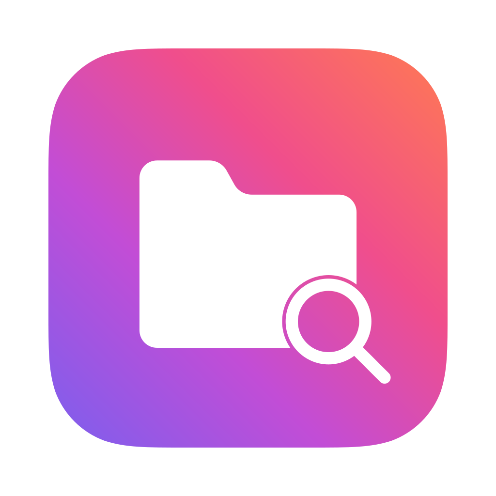

多分頁與多欄工作區
同時開啟多個目錄，在橫向、縱向、三欄和四欄等配置間切換。每個分頁獨立保留瀏覽位置與檢視。

Mac ExplorerFOR MAC為 macOS 打造 · 免費開源
檔案管理，得心應手。
為 macOS 打造的檔案總管。瀏覽、尋找、整理與分享，在一個視窗裡完成。
01 / 瀏覽與整理
檔案、資料夾和專案資料，都依你的方式展開。
同時開啟多個目錄，在橫向、縱向、三欄和四欄等配置間切換。每個分頁獨立保留瀏覽位置與檢視。
清單、圖示、樹狀檢視適應不同內容。搭配分組、排序與欄位篩選，快速縮小範圍。
以巢狀標籤組織資料，為檔案加上星級。首頁收藏夾可調整尺寸、展開瀏覽，分類不移動原始檔案。
查看大小、日期、圖片尺寸、相機與照片中繼資料，計算並複製本機檔案的 SHA-256 雜湊值。
02 / 搜尋與預覽
少開幾個視窗，更快看清檔案內容。
按 ⌘ K 尋找檔案名稱、已建立索引的 PDF 內文和圖片 OCR 文字。選取結果即可預覽，也能直接定位檔案。
依人物、辨識文字、場景、日期和地點瀏覽照片，為人物分組命名。圖片辨識在裝置上完成。
按 Space 查看圖片、PDF、文件、媒體與壓縮檔；直接編輯 Markdown，並查看排版結果。
組合取代、編號、日期、範本與正規表示式。預覽新舊名稱、檢查衝突、儲存預設，完成後支援整批復原。
03 / 處理與傳輸
從本機處理到遠端管理，讓操作保持連貫。
瀏覽和解壓縮 ZIP、TAR、7Z 等格式，建立壓縮檔。將支援的文件轉為 Word、PDF，或轉換圖片格式與尺寸。
複製、移動、傳輸和解壓縮工作在背景執行。查看進度，對支援的工作暫停、繼續、取消或重試。
管理 SFTP 檔案，編輯後自動回傳；透過 macOS 掛載 SMB 共享，從網路頁面探索和連線伺服器。
從右鍵選單傳送檔案與資料夾，接收前確認裝置和檔案清單；也可使用 macOS AirDrop 分享選取項目。
04 / 效率與擴充
把常用操作留在手邊，讓重複工作更輕鬆。
從選單列取用下載、桌面、自訂目錄和收藏夾。直接瀏覽、預覽，將檔案複製拖曳至其他應用程式。
用自然語言尋找資料、整理選取項目、準備重新命名規則或轉換檔案。修改檔案或傳送內文前，先確認計畫。
官網版支援外掛市集、本機外掛包和首頁指令碼。為常用指令設定圖示、Shell 與工作目錄。
選擇淺色或深色、玻璃表面與排版密度。自訂快捷鍵，長按 ⌘ 查看提示，支援簡繁中文、英文和法文。
Mac Explorer 是一款為 macOS 打造的開源 Mac 檔案總管，將多分頁、多欄瀏覽、標籤收藏、檔案預覽與搜尋集中在一個視窗。
支援 macOS 14 或更新版本，適用於 Apple Silicon 和 Intel。
官網版免費開源，支援外掛、指令碼與終端機操作。App Store 版採用訂閱，並使用系統目錄授權；具體功能和價格以商店頁面為準。
檔案索引、標籤與圖片辨識結果儲存在本機。選用的位置解析、使用者設定的 AI 服務和檔案傳輸會連線至相應服務或選定裝置，詳情見隱私權政策。